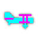

Sopwith II
SDL Sopwith 2.9.0 · original CGA graphics
SOPWITH II
Keyboard or on-screen controls
© DAVID L. CLARK · BMB COMPUSCIENCE · SDL SOPWITH
Takeoff tip: X increases throttle, then , raises the nose.
High scores
SCORES IN THIS BROWSER
| # | INITIALS | SCORE | LEVEL |
|---|
Original game: David L. Clark / BMB Compuscience.
Browser game based on: SDL Sopwith 2.9.0, Simon Howard and contributors.